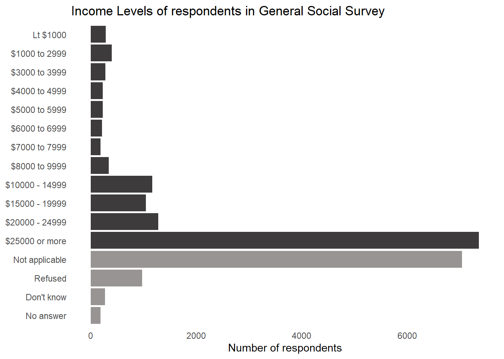
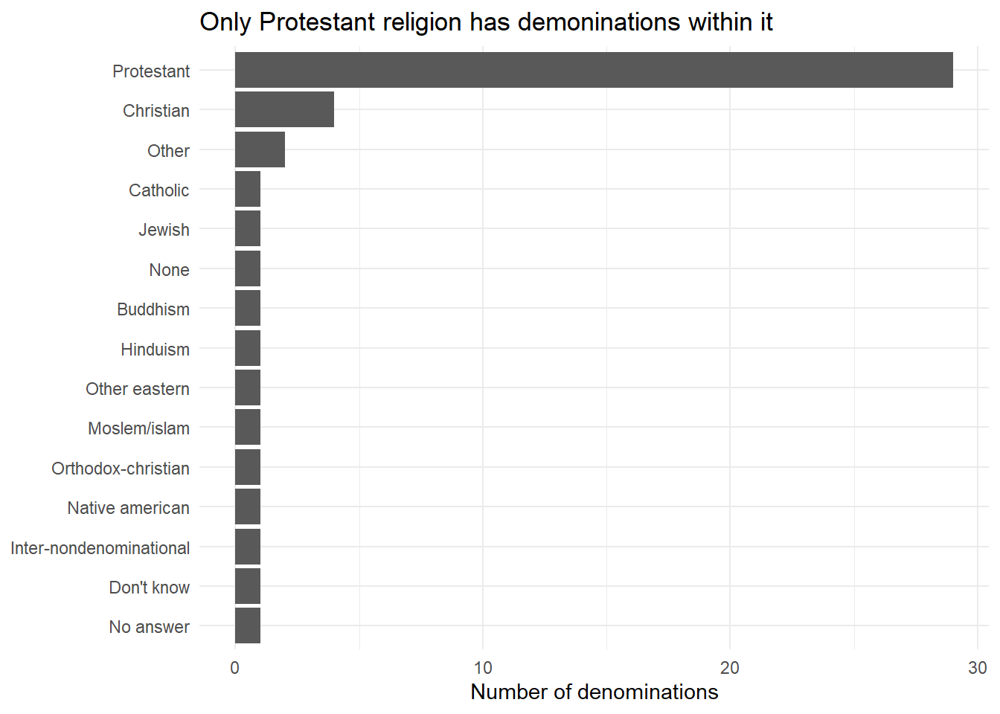
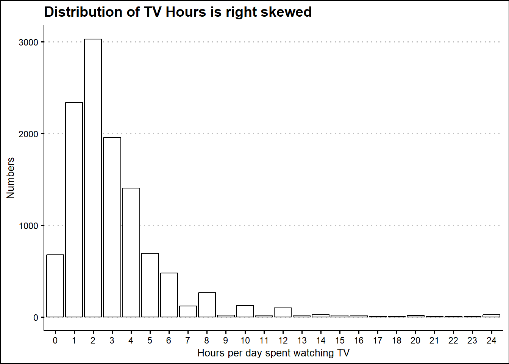
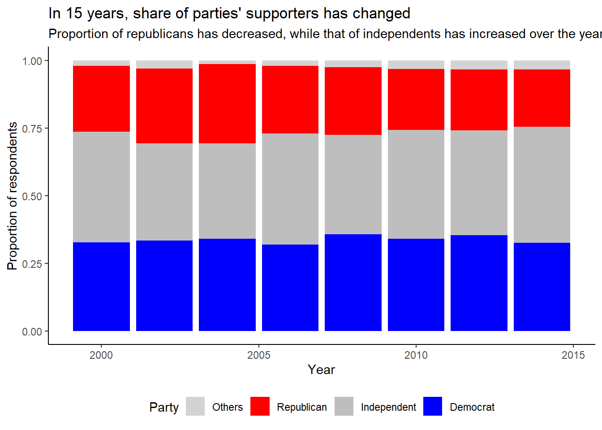

library(tidyverse)
library(ggthemes)
library(gt)
library(gtExtras)
data("gss_cat")Chapter 17
Factors
Important Points
- Most rename and recoding functions in the tidyverse, the new values go on the left and the old values go on the right.
17.3.1 Exercise
Question 1
Explore the distribution of rincome (reported income). What makes the default bar chart hard to understand? How could you improve the plot?
The default bar chart is hard to understand because: –
It is vertical, and the names of categories overlap on x-axis.
The “Not applicable” category is before the lowest income group. Thus, the pattern is disturbed.
We could improve the plot, as shown in Figure 1, by: —
Making it into a horizontal bar chart to allow space and easy reading of categories of income levels.
Move the “Not Applicable” level after the highest income level, along-side “Refused”, “Dont’ know” and “No answer”.
Further, we could remove non-data ink, as per principles of Mr. Tufte to make our pattern stand out. Also, we could create a separate colouring scheme for data outside the income levels.
no_levels = levels(gss_cat$rincome)[c(1:3, 16)]
gss_cat |>
mutate(col_level = rincome %in% no_levels) |>
ggplot(aes(y = fct_relevel(rincome,
"Not applicable",
after = 3),
fill = col_level)) +
geom_bar() +
theme_minimal() +
labs(x = "Number of respondents", y = NULL,
title = "Income Levels of respondents in General Social Survey") +
theme(panel.grid.major = element_blank(),
panel.grid.minor = element_blank(),
legend.position = "none") +
scale_fill_manual(values = c("#3d3b3b", "#999494"))
Question 2
What is the most common relig in this survey? What’s the most common partyid?
The most common relig is “Protestant”. And, the most common partyid is “Independent”.
gss_cat |>
count(relig, sort = TRUE)# A tibble: 15 × 2
relig n
<fct> <int>
1 Protestant 10846
2 Catholic 5124
3 None 3523
4 Christian 689
5 Jewish 388
6 Other 224
7 Buddhism 147
8 Inter-nondenominational 109
9 Moslem/islam 104
10 Orthodox-christian 95
11 No answer 93
12 Hinduism 71
13 Other eastern 32
14 Native american 23
15 Don't know 15gss_cat |>
count(partyid, sort = TRUE)# A tibble: 10 × 2
partyid n
<fct> <int>
1 Independent 4119
2 Not str democrat 3690
3 Strong democrat 3490
4 Not str republican 3032
5 Ind,near dem 2499
6 Strong republican 2314
7 Ind,near rep 1791
8 Other party 393
9 No answer 154
10 Don't know 1Question 3
Which relig does denom (denomination) apply to? How can you find out with a table? How can you find out with a visualization?
We can see from the code below that more than one factor values in denom (denomination) occur only in “Protestant”, “Christian” and “Other” religions. To explore further, we can cross-tabulate religion and denomination, as shown in Table 1, and realize that the only religion to which denomination really applies to is “Protestant”.
We could also do a visualization as in Figure 2 .
gss_cat |>
group_by(relig) |>
summarise(n = n_distinct(denom)) |>
arrange(desc(n)) |>
filter(n > 1)# A tibble: 3 × 2
relig n
<fct> <int>
1 Protestant 29
2 Christian 4
3 Other 2gss_cat |>
filter(relig %in% c("Protestant", "Christian", "Other")) |>
group_by(relig, denom) |>
tally() |>
spread(relig, n) |>
arrange(desc(Christian)) |>
gt() |>
sub_missing(missing_text = "") |>
gt_theme_538()| denom | Christian | Other | Protestant |
|---|---|---|---|
| No denomination | 452 | 7 | 1224 |
| Not applicable | 224 | 217 | |
| Don't know | 11 | 41 | |
| No answer | 2 | 22 | |
| Other | 2534 | ||
| Episcopal | 397 | ||
| Presbyterian-dk wh | 244 | ||
| Presbyterian, merged | 67 | ||
| Other presbyterian | 47 | ||
| United pres ch in us | 110 | ||
| Presbyterian c in us | 104 | ||
| Lutheran-dk which | 267 | ||
| Evangelical luth | 122 | ||
| Other lutheran | 30 | ||
| Wi evan luth synod | 71 | ||
| Lutheran-mo synod | 212 | ||
| Luth ch in america | 71 | ||
| Am lutheran | 146 | ||
| Methodist-dk which | 239 | ||
| Other methodist | 33 | ||
| United methodist | 1067 | ||
| Afr meth ep zion | 32 | ||
| Afr meth episcopal | 77 | ||
| Baptist-dk which | 1457 | ||
| Other baptists | 213 | ||
| Southern baptist | 1536 | ||
| Nat bapt conv usa | 40 | ||
| Nat bapt conv of am | 76 | ||
| Am bapt ch in usa | 130 | ||
| Am baptist asso | 237 |
gss_cat |>
group_by(relig) |>
summarise(n = n_distinct(denom)) |>
arrange(desc(n)) |>
ggplot(aes(y = reorder(relig, n), x = n)) +
geom_bar(stat = "identity") +
theme_minimal() +
labs(x = "Number of denominations", y = NULL,
title = "Only Protestant religion has demoninations within it")
17.4.1 Exercises
Question 1
There are some suspiciously high numbers in tvhours. Is the mean a good summary?
No, mean is not a good summary as the distribution of tvhours is right skewed. Instead, we should use median as a summary measure.
gss_cat |>
drop_na() |>
mutate(tvhours = as_factor(tvhours)) |>
ggplot(aes(x = tvhours)) +
geom_bar(col = "black", fill = "white") +
theme_clean() +
labs(x = "Hours per day spent watching TV",
y = "Numbers", title = "Distribution of TV Hours is right skewed")
Question 2
For each factor in gss_cat identify whether the order of the levels is arbitrary or principled.
The variables in the gss_cat data-set which are factors are: —
| Factor Variable | Levels | Order is arbitrary or principled |
|---|---|---|
marital |
No answer, Never married, Separated, Divorced, Widowed and, Married | Arbitrary, since they are not in a specific order |
race |
Other, Black, White and, Not applicable | Arbitrary, since they are not in a specific order |
rincome |
No answer, Don’t know, Refused, $25000 or more, $20000 - 24999, $15000 - 19999, $10000 - 14999, $8000 to 9999, $7000 to 7999, $6000 to 6999, $5000 to 5999, $4000 to 4999, $3000 to 3999, $1000 to 2999, Lt $1000 and, Not applicable | Principled, since the income levels are in a specified increasing or decreasing order, with few levels arbitrary |
partyid |
No answer, Don’t know, Other party, Strong republican, Not str republican, Ind,near rep, Independent, Ind,near dem, Not str democrat and, Strong democrat | Partly Principled, as there are two extremes, and then levels in the middle. |
relig |
No answer, Don’t know, Inter-nondenominational, Native american, Christian, Orthodox-christian, Moslem/islam, Other eastern, Hinduism, Buddhism, Other, None, Jewish, Catholic, Protestant and, Not applicable | Arbitrary, as the religions are not in a specific order. |
denom |
No answer, Don’t know, No denomination, Other, Episcopal, Presbyterian-dk wh, Presbyterian, merged, Other presbyterian, United pres ch in us, Presbyterian c in us, Lutheran-dk which, Evangelical luth, Other lutheran, Wi evan luth synod, Lutheran-mo synod, Luth ch in america, Am lutheran, Methodist-dk which, Other methodist, United methodist, Afr meth ep zion, Afr meth episcopal, Baptist-dk which, Other baptists, Southern baptist, Nat bapt conv usa, Nat bapt conv of am, Am bapt ch in usa, Am baptist asso and, Not applicable | Arbitrary, as the denominations are not in a specific order. |
Question 3
Why did moving “Not applicable” to the front of the levels move it to the bottom of the plot?
Moving “Not applicable” to the front of the levels move it to the bottom of the plot, because ggplot2 plots the levels in increasing order, starting bottom’s upwards.
17.5.1 Exercises
Question 1
How have the proportions of people identifying as Democrat, Republican, and Independent changed over time?
As reflected in the Figure 3, the proportions of people identifying as Democrat has slightly increased, Republican has slightly decreased, and Independent has increased, over the period of 15 years reflected in the data-set.
gss_cat |>
mutate(
partyid = fct_collapse(partyid,
"Republican" = c("Strong republican", "Not str republican"),
"Democrat" = c("Strong democrat", "Not str democrat"),
"Independent" = c("Independent", "Ind,near dem", "Ind,near rep"),
"Others" = c("No answer", "Don't know", "Other party")
)
) |>
group_by(year, partyid) |>
count() |>
ggplot(aes(x = year, y = n, fill = partyid)) +
geom_col(position = "fill") +
scale_fill_manual(values = c("lightgrey", "red", "grey", "blue")) +
theme_classic() +
theme(legend.position = "bottom") +
labs(x = "Year", y = "Proportion of respondents", fill = "Party",
subtitle = "Proportion of republicans has decreased, while that of independents has increased over the years",
title = "In 15 years, share of parties' supporters has changed")
Question 2
How could you collapse rincome into a small set of categories?
We could collapse the rincome into a small set of categories using the following functions: –
fct_lump_n()fct_lump_lowfreq()fct_lump_min()fct_lump_prop()fct_lump()fct_collapse()
gss_cat|>
mutate(
rincome = fct_lump_n(rincome, n = 6)
) |>
group_by(rincome) |>
count() |>
arrange(desc(n)) |>
ungroup() |>
gt() |>
cols_label(rincome = "Annual Income",
n = "Numbers")| Annual Income | Numbers |
|---|---|
| $25000 or more | 7363 |
| Not applicable | 7043 |
| Other | 2603 |
| $20000 - 24999 | 1283 |
| $10000 - 14999 | 1168 |
| $15000 - 19999 | 1048 |
| Refused | 975 |
Question 3
Notice there are 9 groups (excluding other) in the fct_lump example above. Why not 10? (Hint: type ?fct_lump, and find the default for the argument other_level is “Other”.)
Yes, there are 9 groups (excluding other) in this example, as shown below also in Figure 4. This is because n = 10 argument limits the total groups to 10, and the function needs one group for “Other”, i.e. all other groups whose count is lesser than top 9 groups. Thus, the groups shown are 9, with 1 as “Other” (at the end).
gss_cat |>
mutate(relig = fct_lump_n(relig, n = 10)) |>
count(relig) |>
gt()| relig | n |
|---|---|
| Inter-nondenominational | 109 |
| Christian | 689 |
| Orthodox-christian | 95 |
| Moslem/islam | 104 |
| Buddhism | 147 |
| None | 3523 |
| Jewish | 388 |
| Catholic | 5124 |
| Protestant | 10846 |
| Other | 458 |